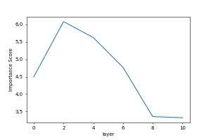

Entering the Transformer Factor and the embedding from which layer you want to visualize:
Low and Mid Level:
Please enter an integer from 0 to 1499, indicating the tranformer factor you want to visualize:
Please enter an integer from 0,2,4,6,8,10, indicating the tranformer layer for word embedding:

High Level:
Visualizing high level information requires LIME to generate saliency map, which is very costly. We prepared some of those to you: